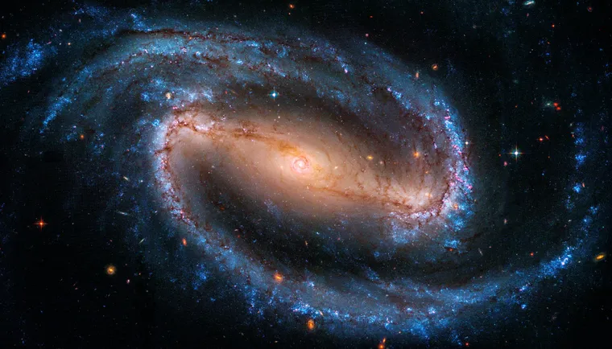

Bem-vindo ao Portal de Astronomia
Explore artigos, dados históricos e descobertas recentes sobre o espaço.
Sistema Solar
O Sistema Solar é composto por oito planetas, conforme se considera hoje em dia, além de planetas anões e corpos celestes, como asteroides, meteoros, cometas e satélites.
O Sistema Solar é um conjunto formado por oito planetas e outros corpos celestes, que orbitam o Sol, a sua principal estrela. Está localizado na Via Láctea, uma das galáxias que formam o Universo. São planetas do Sistema Solar: Mercúrio, Vênus, Terra, Marte, Júpiter, Saturno, Urano e Netuno.
Ver Mais Sobre PlanetasMissões Espaciais
São expedições fora da Terra que usam satélites, sondas e naves tripuladas para estudar o universo e criar novas tecnologias.
Missão Apollo 11 Em 1969, a Apollo 11 levou os primeiros seres humanos à superfície da Lua. Neil Armstrong e Buzz Aldrin caminharam em solo lunar, marcando um dos momentos mais importantes da história da exploração espacial.
Missões a Marte Missões como a Mars Rover Perseverance exploram a superfície de Marte em busca de sinais de vida antiga. Esses robôs analisam rochas, estudam o clima e ajudam a preparar futuras missões tripuladas ao planeta.
Estação Espacial Internacional (ISS) A ISS é um laboratório em órbita da Terra onde astronautas de diferentes países realizam experimentos científicos. As pesquisas contribuem para avanços na medicina, na tecnologia e na exploração espacial.
Telescópio Espacial James Webb Lançado em 2021, o James Webb observa galáxias distantes, estrelas em formação e atmosferas de exoplanetas. Suas descobertas ajudam os cientistas a investigar a origem e a evolução do Universo.
Programa Artemis O programa Artemis, da NASA, tem como objetivo levar astronautas novamente à Lua e desenvolver tecnologias para futuras explorações humanas de Marte. Conclusão: As missões espaciais ampliam nosso conhecimento sobre o Universo e abrem caminho para novas descobertas científicas e tecnológicas.
Ver mais sobre Missões Espaciais

Curiosidades da Astronomia
Descubra fatos interessantes sobre as galáxias, as estrelas e os mistérios do Universo.
Ver Curiosidades